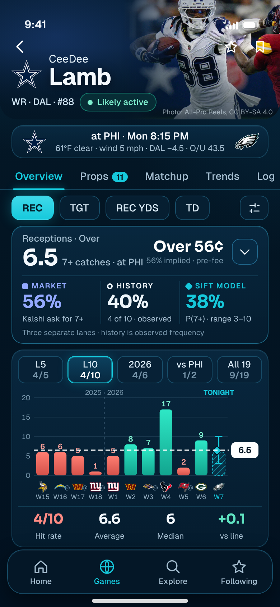
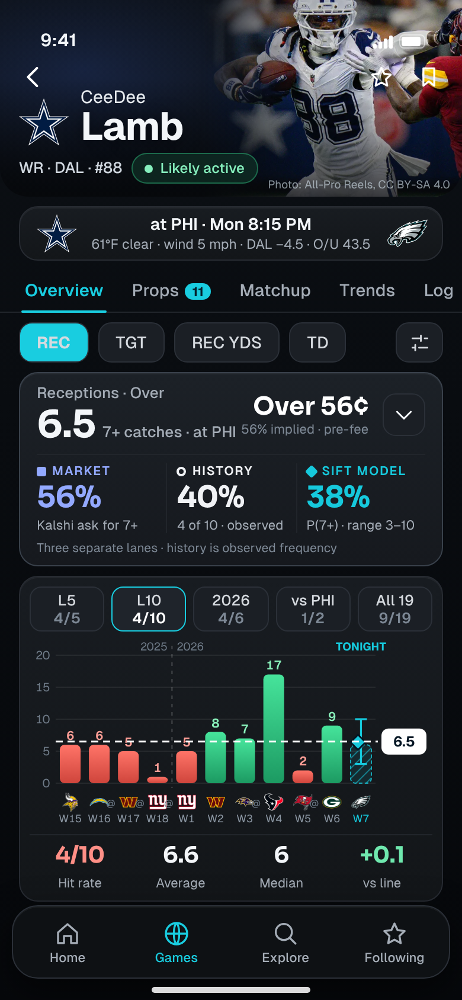
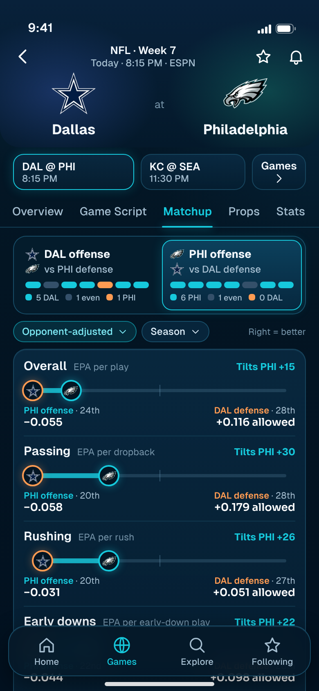
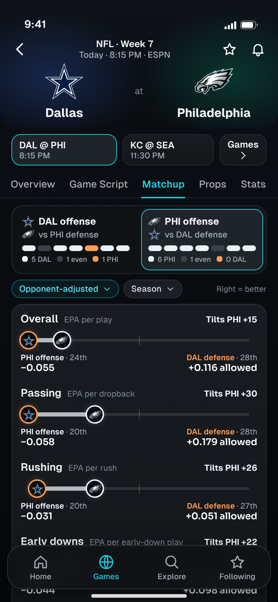

<title>SIFT Palette Review</title>
<meta name="claude:viewport-fit-sides" content="cover">
<link rel="stylesheet" href="https://fonts.googleapis.com/css2?family=Geist:wght@400;500;600;700&family=Sora:wght@600;700&display=swap">
<style>
  :root { color-scheme: dark; --bg:#080b10; --card1:#181c21; --card2:#131619; --line:#272b32; --hair:#21252b; --text:#f3f6f9; --muted:#a4acb6; --dim:#7d8895; --cyan:#19cde0;
    --ui:'Geist',-apple-system,'SF Pro Text','Helvetica Neue',Arial,sans-serif; --num:'Sora','Geist',-apple-system,Arial,sans-serif; }
  * { box-sizing: border-box; }
  body { background: radial-gradient(110% 30% at 8% -4%, rgba(72,88,116,.14), transparent 62%), linear-gradient(180deg,#0c1015,#090c10 40%,#06080b); color: var(--text); font: 400 16px/1.55 var(--ui); padding-left: max(16px, env(safe-area-inset-left, 0px)); padding-right: max(16px, env(safe-area-inset-right, 0px)); padding-block: 28px 64px; -webkit-font-smoothing: antialiased; }
  main { max-width: 1000px; margin: 0 auto; display: grid; gap: 44px; }
  h1 { font: 700 clamp(30px, 6vw, 44px)/1.1 var(--ui); letter-spacing: -.03em; text-wrap: balance; } h1 em { font-style: normal; color: var(--cyan); }
  h2 { font: 700 clamp(22px, 4vw, 27px)/1.2 var(--ui); letter-spacing: -.02em; text-wrap: balance; }
  h3 { font: 600 17px/1.3 var(--ui); }
  p { color: #c3c8ce; max-width: 68ch; } .dim { color: var(--dim); } .sm { font-size: 14px; }
  .eyebrow { font: 600 12px/1 var(--ui); letter-spacing: .1em; text-transform: uppercase; color: var(--cyan); }
  .banner { display: flex; flex-wrap: wrap; gap: 8px 18px; padding: 12px 14px; border-radius: 14px; border: 1px solid var(--line); background: #11141a; font-size: 14px; color: var(--muted); } .banner b { color: var(--text); font-weight: 600; }
  .card { border-radius: 18px; border: 1px solid var(--line); background: linear-gradient(180deg, var(--card1), var(--card2)); padding: 18px; }
  .pair { display: grid; gap: 22px; grid-template-columns: 1fr 1fr; }
  @media (max-width: 760px) { .pair { grid-template-columns: 1fr; } .pair.tog figure:not(.show) { display: none; } .seg { display: grid !important; } }
  .seg { display: none; grid-template-columns: 1fr 1fr; gap: 6px; padding: 4px; border-radius: 14px; border: 1px solid var(--line); background: #0f1215; }
  .seg button { height: 44px; border-radius: 10px; border: 1px solid transparent; background: transparent; color: var(--muted); font: 600 14px var(--ui); cursor: pointer; } .seg button[aria-pressed='true'] { background: #1f242b; border-color: var(--cyan); color: var(--text); }
  figure { margin: 0; display: grid; gap: 10px; justify-items: center; align-content: start; }
  figure img { width: 100%; max-width: 390px; height: auto; border-radius: 26px; border: 1px solid var(--line); display: block; box-shadow: 0 18px 50px rgba(0,0,0,.55); }
  figcaption { font: 600 14px var(--ui); color: var(--muted); text-align: center; max-width: 390px; } figcaption b { color: var(--text); }
  .sw { display: grid; gap: 8px; grid-template-columns: repeat(auto-fill, minmax(150px, 1fr)); }
  .sw div { border-radius: 12px; border: 1px solid rgba(255,255,255,.08); overflow: hidden; display: grid; font-size: 12.5px; } .sw i { display: block; height: 44px; } .sw span { padding: 7px 9px 8px; background: #101317; color: #cfd5db; line-height: 1.3; } .sw span b { display: block; color: var(--text); font-weight: 600; font-size: 13px; }
  .cols { display: grid; gap: 14px; grid-template-columns: repeat(auto-fit, minmax(280px, 1fr)); }
  ul.tight { display: grid; gap: 7px; padding-left: 20px; color: #c3c8ce; font-size: 15px; } ul.tight b { color: var(--text); font-weight: 600; }
  table { width: 100%; border-collapse: collapse; font-size: 14px; } th { text-align: left; font: 600 12px/1.2 var(--ui); letter-spacing: .08em; text-transform: uppercase; color: var(--dim); padding: 0 10px 10px 0; } td { padding: 9px 10px 9px 0; border-top: 1px solid var(--hair); vertical-align: top; color: #c3c8ce; } td:first-child { color: var(--text); font-weight: 500; }
  .scroll { overflow-x: auto; } .scroll table { min-width: 560px; }
  ol.ask { display: grid; gap: 10px; } ol.ask li { list-style: none; padding: 12px 14px; border-radius: 12px; border: 1px solid var(--line); background: #11141a; font-size: 15px; color: #c3c8ce; } ol.ask li b { color: var(--text); }
</style>

<main>
<header style="display:grid;gap:14px">
  <span class="eyebrow">Colour direction · design only</span>
  <h1>Midnight navy, or <em>ink and graphite</em>?</h1>
  <p>The same two screens, rendered twice: P1 Player Overview and G1 Game Matchup. Content, layout, data, type and components are identical. Only the colour treatment differs. No production code was touched, and no component was redesigned.</p>
  <div class="banner"><span><b>A</b> is the current approved midnight-navy palette, unchanged.</span><span><b>B</b> moves the foundation to near-black ink, makes surfaces neutral graphite, and keeps vibrant cyan for selection, primary actions and SIFT.</span></div>
</header>

<section style="display:grid;gap:16px">
  <div><span class="eyebrow">P1 · Player Overview</span><h2>Chart first, lanes intact</h2></div>
  <div class="seg" data-for="p1"><button aria-pressed="true" data-t="A">A · Midnight navy</button><button aria-pressed="false" data-t="B">B · Ink and graphite</button></div>
  <div class="pair tog" id="p1">
    <figure class="show" data-t="A"><figcaption><b>A</b> · current midnight navy</figcaption></figure>
    <figure data-t="B"><figcaption><b>B</b> · ink and graphite</figcaption></figure>
  </div>
</section>

<section style="display:grid;gap:16px">
  <div><span class="eyebrow">G1 · Game Matchup</span><h2>Offense against defense, both ways</h2></div>
  <div class="seg" data-for="g1"><button aria-pressed="true" data-t="A">A · Midnight navy</button><button aria-pressed="false" data-t="B">B · Ink and graphite</button></div>
  <div class="pair tog" id="g1">
    <figure class="show" data-t="A"><figcaption><b>A</b> · current midnight navy</figcaption></figure>
    <figure data-t="B"><figcaption><b>B</b> · ink and graphite</figcaption></figure>
  </div>
  <p class="sm dim">On a phone, use the A / B switch above each pair to flip between them in place. On a wider screen they sit side by side.</p>
</section>

<section style="display:grid;gap:16px">
  <div><span class="eyebrow">What changes</span><h2>The palette, token by token</h2></div>
  <div class="cols">
    <div class="card" style="display:grid;gap:12px"><h3>A · Midnight navy (current)</h3>
      <div class="sw">
        <div><i style="background:#031523"></i><span><b>Foundation</b>#031523</span></div>
        <div><i style="background:linear-gradient(180deg,#0b2e48,#061f32)"></i><span><b>Card</b>#0b2e48 → #061f32</span></div>
        <div><i style="background:#174861"></i><span><b>Border</b>#174861 · blue</span></div>
        <div><i style="background:#1c6683"></i><span><b>Strong border</b>#1c6683 · blue</span></div>
        <div><i style="background:#a4bdcf"></i><span><b>Muted text</b>#a4bdcf</span></div>
        <div><i style="background:#7593a8"></i><span><b>Dim text</b>#7593a8</span></div>
        <div><i style="background:#16c9dc"></i><span><b>Cyan</b>#16c9dc · everywhere</span></div>
      </div></div>
    <div class="card" style="display:grid;gap:12px"><h3>B · Ink and graphite</h3>
      <div class="sw">
        <div><i style="background:#080b10"></i><span><b>Foundation</b>#080b10 · ink</span></div>
        <div><i style="background:linear-gradient(180deg,#181c21,#131619)"></i><span><b>Card</b>#181c21 → #131619</span></div>
        <div><i style="background:#272b32"></i><span><b>Border</b>#272b32 · slate</span></div>
        <div><i style="background:#39414b"></i><span><b>Raised border</b>#39414b · slate</span></div>
        <div><i style="background:#a4acb6"></i><span><b>Muted text</b>#a4acb6</span></div>
        <div><i style="background:#7d8895"></i><span><b>Dim text</b>#7d8895</span></div>
        <div><i style="background:#19cde0"></i><span><b>Cyan</b>#19cde0 · selection, SIFT</span></div>
      </div></div>
  </div>
  <div class="card" style="display:grid;gap:12px"><h3>Semantic colours: strong, and used for one meaning each</h3>
    <div class="scroll"><table><thead><tr><th>Meaning</th><th>A</th><th>B</th><th>Note</th></tr></thead><tbody>
      <tr><td>Hit / over</td><td><span style="color:#2ee8c6">■</span> teal #2ee8c6</td><td><span style="color:#46e49b">■</span> green #46e49b</td><td>B moves hits to true green so they are never confused with the cyan interface colour.</td></tr>
      <tr><td>Miss / under</td><td><span style="color:#ff7e72">■</span> #ff7e72</td><td><span style="color:#ff7468">■</span> #ff7468</td><td>Essentially unchanged.</td></tr>
      <tr><td>Market lane</td><td><span style="color:#93a9ff">■</span> #93a9ff</td><td><span style="color:#93a9ff">■</span> #93a9ff</td><td>Unchanged: periwinkle stays the Kalshi colour.</td></tr>
      <tr><td>History lane</td><td><span style="color:#eef6fb">○</span> #eef6fb</td><td><span style="color:#f0f2f5">○</span> #f0f2f5</td><td>Ivory, neutral.</td></tr>
      <tr><td>SIFT lane, projection</td><td><span style="color:#16c9dc">◆</span> #16c9dc</td><td><span style="color:#16c9dc">◆</span> #16c9dc</td><td>Unchanged. This is the “meaningful SIFT highlight”.</td></tr>
      <tr><td>Offense</td><td><span style="color:#16c9dc">●</span> cyan</td><td><span style="color:#eaf1f7">●</span> ice #eaf1f7</td><td>Offense no longer borrows the interface cyan.</td></tr>
      <tr><td>Defense</td><td><span style="color:#ff9b52">●</span> #ff9b52</td><td><span style="color:#ff9b52">●</span> #ff9b52</td><td>Unchanged amber. Ice against amber is the strongest pairing on graphite.</td></tr>
      <tr><td>Team identity, photography</td><td colspan="2">Their own colours; the photo is untouched in both.</td><td>Hero glow is the team colour over ink, not generic blue.</td></tr>
    </tbody></table></div></div>
</section>

<section style="display:grid;gap:16px">
  <div><span class="eyebrow">Rules for B</span><h2>Where cyan goes, and where it no longer goes</h2></div>
  <div class="cols">
    <div class="card"><h3>Cyan is for</h3><ul class="tight"><li><b>Selected navigation:</b> the active tab and its underline, the active bottom-bar item.</li><li><b>Primary interaction:</b> the selected stat pill, Apply.</li><li><b>Selection state:</b> the chosen window, direction and game, as a 1px border with a slight surface lift.</li><li><b>SIFT:</b> the SIFT lane, the projection range and diamond, research-only tags.</li></ul></div>
    <div class="card"><h3>Cyan no longer appears as</h3><ul class="tight"><li>Card, button and chip borders: now slate hairlines.</li><li>Glows around selected items.</li><li>Surface fills: panels are graphite instead of stacked blues.</li><li>The offense colour in matchup rows and meters.</li><li>The colour of “tilt” labels (now ice or amber by side).</li></ul></div>
  </div>
</section>

<section style="display:grid;gap:14px">
  <div><span class="eyebrow">Measured on the renders</span><h2>Less blue, same cyan where it matters</h2></div>
  <div class="card scroll"><table><thead><tr><th>Measure</th><th>A</th><th>B</th></tr></thead><tbody>
    <tr><td>Saturation of dark surfaces, P1 (0 = grey, 1 = pure colour)</td><td>0.86</td><td>0.34</td></tr>
    <tr><td>Saturation of dark surfaces, G1</td><td>0.87</td><td>0.36</td></tr>
    <tr><td>Vibrant cyan, share of pixels, P1</td><td>1.1%</td><td>1.0%</td></tr>
    <tr><td>Vibrant cyan, share of pixels, G1</td><td>1.7%</td><td>0.5%</td></tr>
    <tr><td>Text contrast on cards: primary / muted / dim</td><td>15.0 / 8.1 / 4.9</td><td>15.8 / 7.5 / 4.8 (all above 4.5)</td></tr>
  </tbody></table></div>
  <p class="sm dim">In P1 the amount of cyan is about the same, because the SIFT lane, the selected pill and the selected window are all meaningful. What changes is where it sits: borders, glows and panel fills no longer carry it. Pixel shares and saturation were computed from the two screenshots; contrast uses the WCAG formula on the card colours.</p>
</section>

<section style="display:grid;gap:14px">
  <div><span class="eyebrow">Your call</span><h2>Approve a direction before anything is applied</h2></div>
  <ol class="ask">
    <li><b>A or B.</b> If B, I carry it to the other five mockups and the board, still design only.</li>
    <li><b>Offense colour.</b> B uses ice for offense against amber for defense, so cyan stays reserved. The alternative is to keep a (muted) teal for offense.</li>
    <li><b>Hit colour.</b> B’s hits are true green rather than teal. Keep, or return to teal?</li>
    <li><b>Ink depth.</b> B’s foundation is #080b10. A slightly lifted #0c1015 would show more navy; #05070a would be closer to black.</li>
    <li><b>Hero glow.</b> B tints the hero with the team’s colour over ink (Dallas navy, Philadelphia green). Keep, or neutral ink only?</li>
  </ol>
</section>
</main>

<script>
  document.querySelectorAll('.seg').forEach(function (seg) {
    var wrap = document.getElementById(seg.getAttribute('data-for'));
    seg.querySelectorAll('button').forEach(function (b) {
      b.addEventListener('click', function () {
        var t = b.getAttribute('data-t');
        seg.querySelectorAll('button').forEach(function (x) { x.setAttribute('aria-pressed', x === b ? 'true' : 'false'); });
        wrap.querySelectorAll('figure').forEach(function (f) { f.classList.toggle('show', f.getAttribute('data-t') === t); });
      });
    });
  });
</script>
